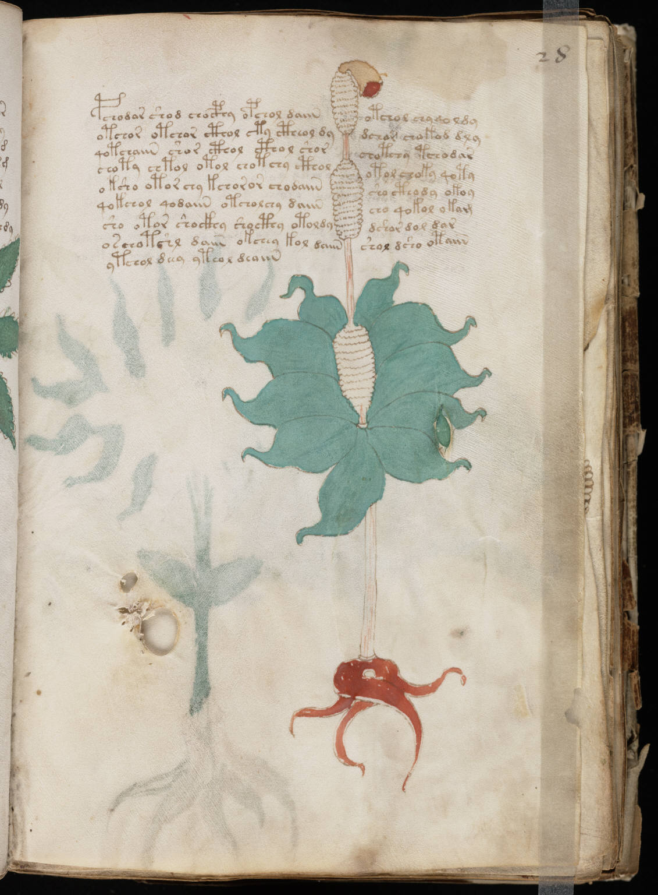

f28r
1pchodar shod chocphy opchol daiinotchol chyqo ldy2otchor otchor cthol cty ctheol dydchar chakod dly3qotchaiin shor cthol cthol shorchotchy tchodar4choty chtol otol chotchy ctholotol choky qoty5oksho otor chy kchoror chodaiinsho cthody okoy6qokchol qodaiin otcholchy daiincho qokol okam7sho otor shockhy shocthy otoldydshor dol dar8oschotshl daiin okchey kol daiinshol dsho otaiin9ytchol deey yteol deaiin
